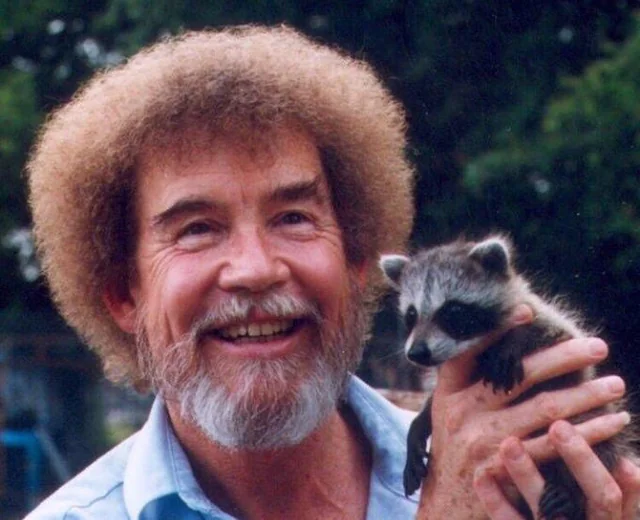
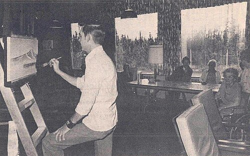
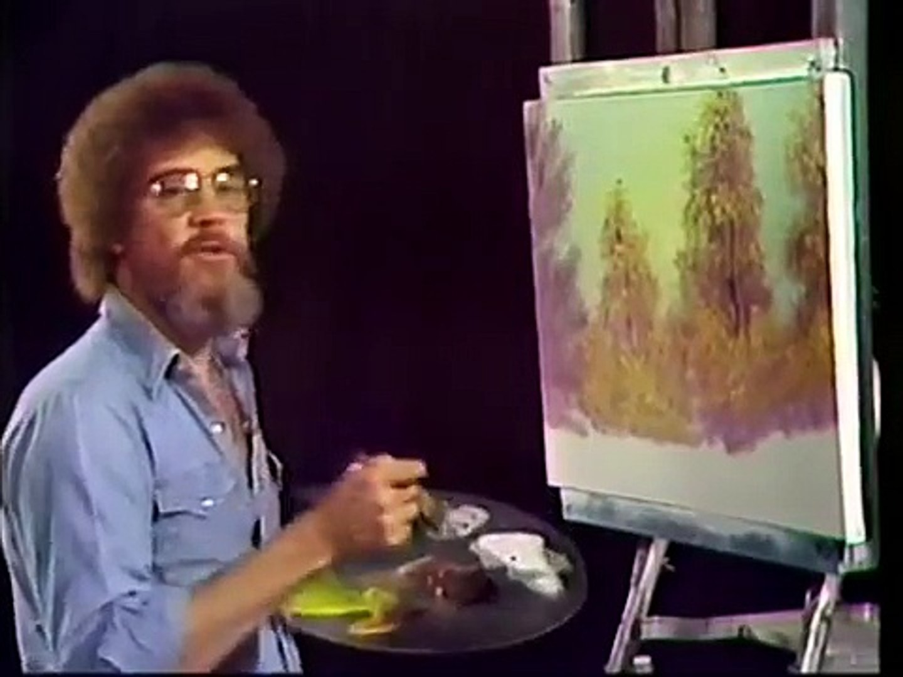
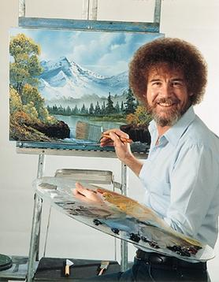

Robert Norman Ross was an American painter and art instructor who created and hosted The Joy of Painting, an instructional television program that aired from 1983 to 1994.

Ross was born in Daytona Beach, Florida, to Jack and Ollie Ross, a carpenter and a waitress respectively, and raised in Orlando, Florida.As an adolescent, Ross cared for injured animals, including armadillos, snakes, alligators and squirrels, one of which was later featured in several episodes of his television show. In 1961, 18-year-old Ross enlisted in the United States Air Force. Herose to the rank of master sergeant and served as the first sergeant of the clinic at Eielson Air ForceBase in Alaska, where he first saw the snow and mountains that later appear as recurring themes in hispaintings. Ross decided he would not raise his voice when he left the military.

Retiring from the Air Force in 1981, he was discovered by Annette Kowalski, who had attended one of his sessions while he was working as a tutor. She and her husband helped Ross pool together money to set up a new company: Bob Ross Inc. In 1982, a station aired his art class as a pilot, and several PBS stations signed up for The Joy of Painting soon after. The show ran until 1994 and Ross—a cigarette smoker who had severe health problems and expected to die prematurely—died a year later at the age of 52 due to complications from lymphoma.

Ross used a wet-on-wet oil painting technique of painting over a thin base layer of wet paint. The painting could progress without first drying. The technique used a limited selection of tools and colors that did not require a large investment in expensive equipment. Ross frequently recommended odorless paint thinner for brush cleaning.
